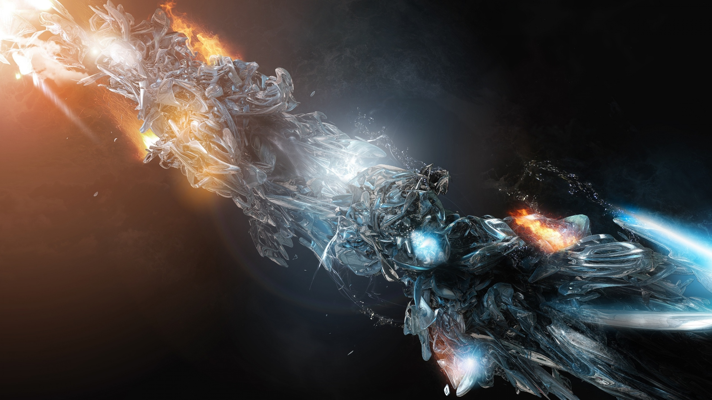

<!--
  Generated template for the BasicComponents page.

  See http://ionicframework.com/docs/v2/components/#navigation for more info on
  Ionic pages and navigation.
-->
<ion-header>
    <ion-navbar>
        <ion-title>BasicComponents</ion-title>
        <ion-buttons start>
            <button ion-button icon-only>
                <ion-icon name="contact"></ion-icon>
            </button>
        </ion-buttons>

        <ion-buttons end>
            <button ion-button icon-only>
                <ion-icon name="search"></ion-icon>
            </button>
        </ion-buttons>
    </ion-navbar>

</ion-header>


<ion-content padding>
  <ion-item>
    <ion-icon name="logo-twitter" color="primary" item-left></ion-icon>
    Followers
    <ion-badge item-right>260k</ion-badge>
  </ion-item>

   <button ion-button color="secondary">Button</button>
   <button ion-button color="primary" outline>Outline button</button>
   <button ion-button color="danger" clean>Clean Button</button>
   <button ion-button color="dark" round>Round Button</button>

    <p>
        <button ion-button color="light" icon-left>
            <ion-icon name='arrow-back'></ion-icon>
            Back
        </button>

        <button ion-button color="light" icon-only>
            <ion-icon name='arrow-down'></ion-icon>
        </button>

        <button ion-button color="light" icon-only>
            <ion-icon name='arrow-up'></ion-icon>
        </button>

        <button ion-button color="light" icon-right>
            Next
            <ion-icon name='arrow-forward'></ion-icon>
        </button>
    </p>

    <p>
        <button ion-button icon-left>
            <ion-icon name='home'></ion-icon>
            Home
        </button>
        <button ion-button outline icon-left>
            <ion-icon name='briefcase' is-active="false"></ion-icon>
            Work
        </button>
        <button ion-button clear icon-left>
            <ion-icon name='beer' is-active="false"></ion-icon>
            Pub
        </button>
    </p>

    <p>
        <button ion-button color="secondary" icon-left>
            <ion-icon name='people'></ion-icon>
            Friends
        </button>
        <button ion-button color="secondary" outline icon-left>
            <ion-icon name='paw' is-active="false"></ion-icon>
            Best Friend
        </button>
    </p>

    <p>
        <button ion-button color="danger" icon-left>
            <ion-icon name='close'></ion-icon>
            Remove
        </button>
        <button ion-button color="danger" outline icon-only>
            <ion-icon name='remove-circle' is-active="false"></ion-icon>
        </button>
        <button ion-button color="danger" clear icon-only>
            <ion-icon name='trash' is-active="false"></ion-icon>
        </button>
    </p>

    <p>
        <button ion-button color="dark" round icon-left>
            <ion-icon name='construct' is-active="false"></ion-icon>
            Tools
        </button>
        <button ion-button color="dark" clear icon-only>
            <ion-icon name='hammer' is-active="false"></ion-icon>
        </button>
    </p>

    <ion-card>

        <ion-card-header>
            Card Header
        </ion-card-header>

        <ion-card-content>
            here goes the card cnonetnt<br>
            this is the main content
        </ion-card-content>

    </ion-card>

    <ion-card>
        <ion-card-header>
            Explore Nearby
        </ion-card-header>

        <ion-list>
            <button ion-item>
                <ion-icon name="cart" item-left></ion-icon>
                Shopping
            </button>

            <button ion-item>
                <ion-icon name="medical" item-left></ion-icon>
                Hospital
            </button>

            <button ion-item>
                <ion-icon name="cafe" item-left></ion-icon>
                Cafe
            </button>

            <button ion-item>
                <ion-icon name="paw" item-left></ion-icon>
                Dog Park
            </button>

            <button ion-item>
                <ion-icon name="beer" item-left></ion-icon>
                Pub
            </button>

            <button ion-item>
                <ion-icon name="planet" item-left></ion-icon>
                Space
            </button>

        </ion-list>
    </ion-card>


    <ion-list>
        <ion-card>
            <ion-card-content>
                
            </ion-card-content>

            <ion-item>
                <button ion-button clear item-left>Like</button>
                <button ion-button clear item-right>Comment</button>
            </ion-item>
        </ion-card>
    </ion-list>


</ion-content>
